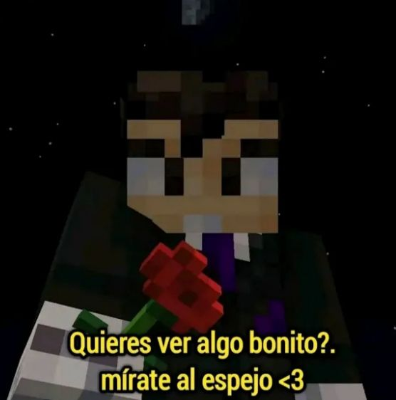
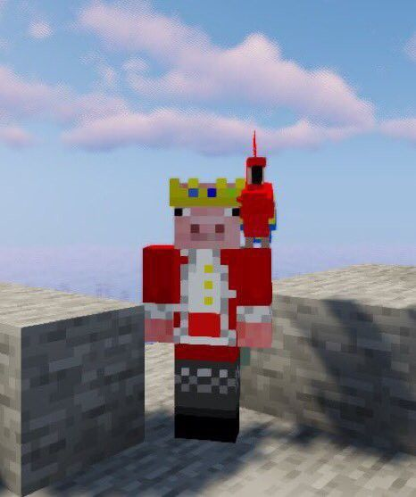
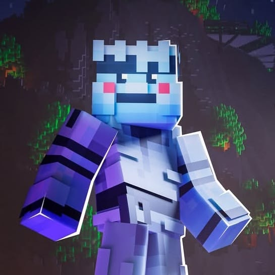
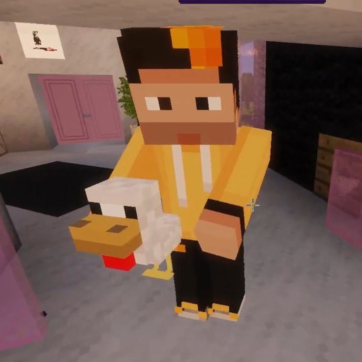
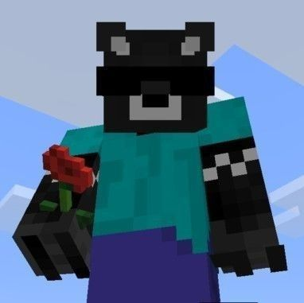
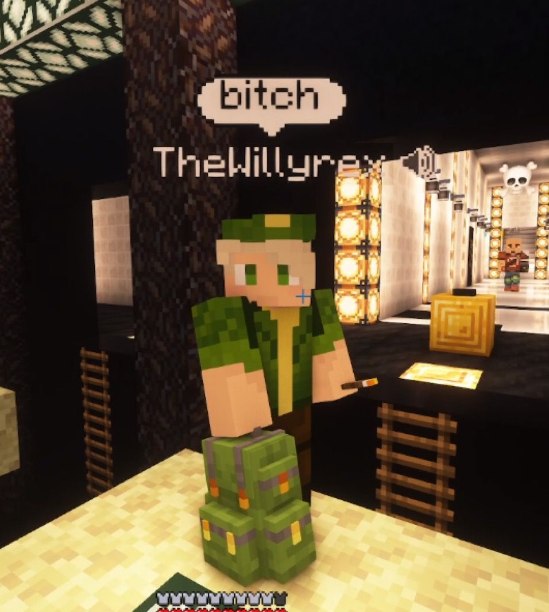
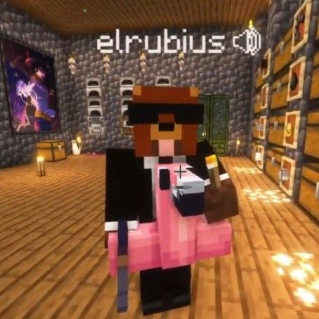
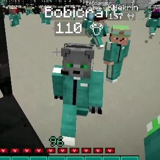
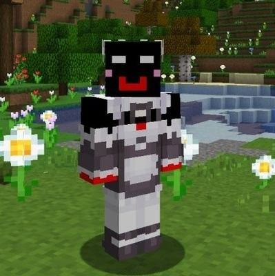

Aprende sobre Minecraft
En esta parte te contamos quienes son los que mas juegan, que esta pasando con los eventos y un repaso de la historia del juego por si no sabias nada de esto.
Streamers de la comunidad de minecraft
Estos son algunos de los que su contenido es muy popular en la comunidad de Minecraft.

Vegetta777

Technoblade

Coldified

AuronPlay

spreen

Willyrex

rubius

Sapnap

Bobi

Shadoune
Los que hay que conocer si o si
Vegetta777
Samuel de LuqueEl streamer español mas conocido de Minecraft. Lleva años con Karmaland y es uno de los que mas horas le ha metido al juego.
Technoblade
AlexFamoso por ganar el Minecraft Monday y ser un crack del PvP. Su lema era "Technoblade never dies". Fallecio en 2022 pero su comunidad lo sigue recordando.
Coldified
El coldiStreamer español que se hizo conocido por sus series de Minecraft con amigos. Bueno para el PvP y para hacer directos largos de supervivencia.
Eventos y noticias
Tortillaland
Es una serie de supervivencia en un servidor privado de Minecraft creada y fundada por los streamers AuronPlay y Perxitaa. Su enfoque principal radica en el roleplay (intercambio de roles), la interacción y las dinámicas sociales entre decenas de creadores de contenido. Utiliza una gran variedad de modificaciones (mods) que dividen a los jugadores en pueblos o comunidades, fomentando tanto la cooperación en construcciones como divertidas rivalidades, bromas o "troleos" bajo estrictas normas de convivencia colectiva.
Squid Craft Games
Es un evento masivo de eliminación directa inspirado en la famosa serie de televisión El juego del calamar (Squid Game), organizado por creadores como AuronPlay, Rubius y Komanche. Durante varios días de transmisión, cientos de creadores de contenido hispanohablantes e internacionales compiten en minijuegos infantiles modificados y sádicos. Cualquier error o fallo implica la eliminación definitiva inmediata del torneo, y el último jugador en pie gana un gran premio monetario en efectivo..
Dedsafio
Es una serie competitiva de formato Hardcore (muerte permanente) organizada por el streamer mexicano ElDed. El objetivo de los participantes es sobrevivir a lo largo de los días mientras la dificultad del servidor se incrementa drásticamente mediante ruletas mecánicas impredecibles que alteran las reglas del juego. Cuenta con una mecánica icónica llamada el "Gulag", donde los jugadores que mueren tienen una última oportunidad de batirse en duelo o superar un reto específico para revivir y reincorporarse a la serie..
Minecraft Live
Minecraft Live es el evento oficial interactivo en formato digital organizado de forma regular por Mojang Studios, diseñado para reunir a la comunidad global de jugadores y revelar el futuro de la franquicia. El evento, que evolucionó a partir de la convención presencial originalmente conocida como MINECON, se transmite en directo a todo el mundo para presentar avances exclusivos de próximas actualizaciones, "game drops", entrevistas con desarrolladores y novedades sobre títulos derivados o proyectos multimedia.